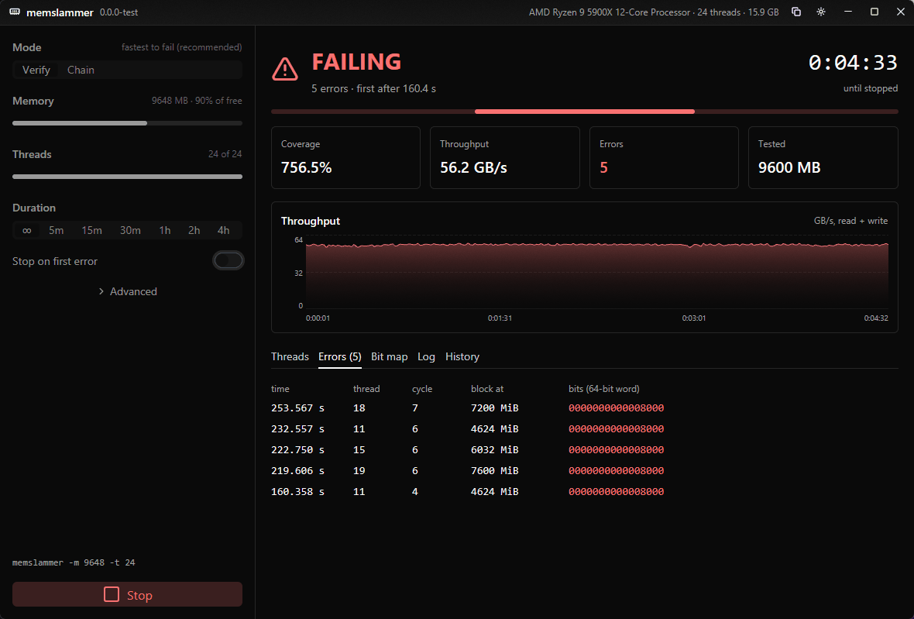
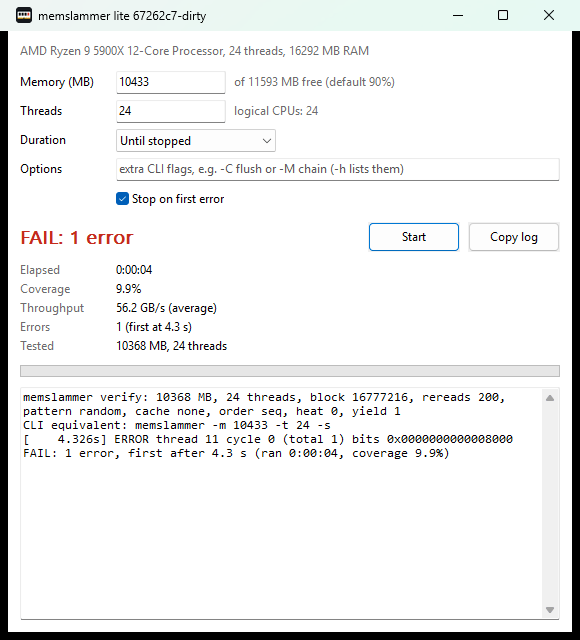
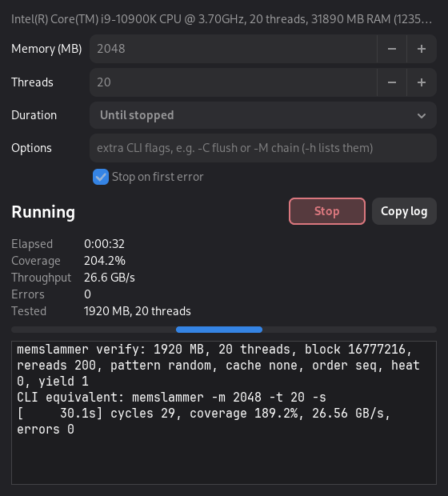
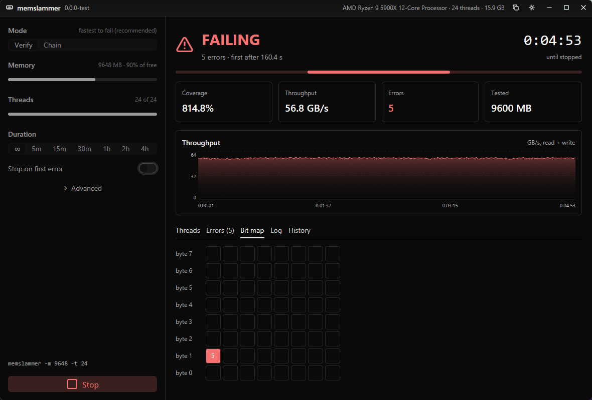
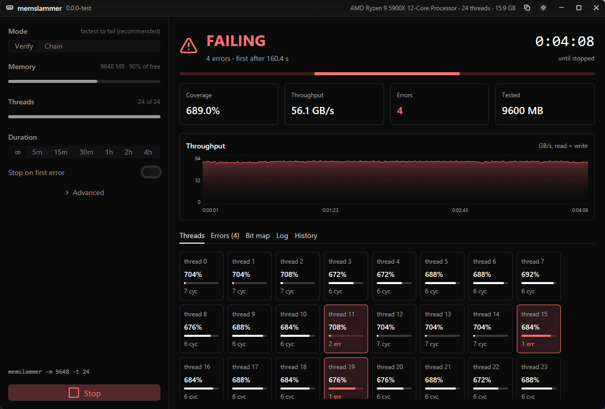

memslammer
One job: make an unstable memory overclock throw an error as fast as possible. We reverse-engineered how the fast-failing testers stress RAM, rebuilt each ingredient clean-room, and kept only what measurably shortened time-to-first-error on real unstable settings.
No installer, driver, admin rights or network access. Single-file binaries; checksums in SHA256SUMS.txt. Needs an x86-64 CPU with AVX2 (Haswell, Zen or newer). MIT licensed.

Using it
- Close other programs, start a test, and wait. The default is
verifymode on 90% of free RAM, all threads, 20 re-reads per fill, until stopped. That's the configuration that failed fastest across both of our test faults. - Any error means the memory overclock is unstable. The GUIs stop at the first error by default.
- Errors come faster once the DIMMs are warm. In our runs, the same DDR4 setting failed within seconds on a hot box (4 s in the lite screenshot below) and took 1.5–3 minutes from cold. The usual loop (change one timing in UEFI, boot, retest) is a cold start, which is what we optimized for.
- If the default passes, try
-r 2next (2 re-reads per fill; "Re-reads per fill" in the full app's advanced settings). It writes four times as often. It found a DDR5 fault that corrupts stored data in 7.5 s against 40 s for the default, and was no faster than the old default on a DDR4 fault that only breaks reads. - A clean run is evidence, not proof. We tuned on two machines and two kinds of fault (described under Results). Use memslammer to reject bad settings quickly, then validate the final one longer, ideally with other testers too.
Three frontends, one engine
The test engine is a small C library (core/). Each frontend links it statically and only polls its status, so all three run byte-for-byte the same test loops.
| what | Windows | Linux | deps | |
|---|---|---|---|---|
memslammer | command line, scriptable, works over SSH and from live USBs | 99 KB | 84 KB | none (static, musl on Linux) |
memslammer-lite | small native window: plain Win32 controls, or GTK 3 on Linux | 152 KB | 60 KB | none on Windows, GTK 3 on Linux |
memslammer-gui | GPU-rendered app (GPUI + gpui-kit): live charts, per-thread progress, error list, failing-bit map, run history, copyable report | 14 MB | 32 MB | Vulkan or GL on Linux |
The CLI and lite window ship together in one tiny archive. The full app is a separate download, so if you don't want a big GPU-rendered binary on your test box, you never get one.


memslammer-lite on Windows: plain Win32, about 150 KB, DPI-aware, taskbar progress, keeps the PC awake while it runs. A real failure, 4 s into a run on a hot box.

memslammer-lite on Linux: GTK 3, follows your desktop theme, inhibits suspend while it runs.



CLI
$ memslammer -s # verify 90% of free RAM, stop at the first error
memslammer verify: 13440 MB, 24 threads, block 16777216, rereads 20, pattern random, cache none, order seq, heat 0, yield 1, late 1, fill store
[ 10.1s] cycles 24, coverage 167.1%, 50.38 GB/s, errors 0
[ 20.1s] cycles 72, coverage 331.4%, 50.70 GB/s, errors 0
[ 30.1s] cycles 102, coverage 494.9%, 50.76 GB/s, errors 0
[ 31.415s] ERROR thread 20 cycle 5 (total 1) bits 0x0000000000008000 pass 7 recheck 0/2
[ 31.5s] cycles 116, coverage 516.2%, 49.61 GB/s, errors 1
RESULT tester=memslammer errors=1 first_error_s=31.415 elapsed_s=31.452Real output on the DDR4 test box, booted from the Linux live USB, warm (right after another run). bits are the bit positions of a 64-bit word that flipped, pass is which re-read caught it (late: the check just before the block's next fill). recheck 0/2 means two more reads of the same data came back right, so the read was bad and the stored data fine; 2/2 means the data in DRAM is wrong.
Options: -m MB, -t threads, -d seconds, -s stop on first error, -M verify|chain, plus every ingredient below (-h lists them). Exit status: 0 no errors, 1 errors, 2 bad arguments. Ctrl+C stops cleanly and prints the summary. Every GUI shows the equivalent CLI command for its settings.
How the test works
verify (default). Each thread owns a share of the test memory and walks it in 16 MiB blocks. It fills a block with random data (xoshiro256**, fresh seed per block), then re-reads and compares the block 20 times, regenerating the expected values on the fly, so there's no second copy to read. Any mismatch is an error, logged with the time, thread, block offset and the exact bits that flipped. Then it moves to the next block. When it comes back to a block a cycle later, it compares it once more before refilling it: by then the data has sat in DRAM unread while the rest of the memory was being tested, which is what shows a refresh or retention problem.
What we learned building it (details and raw data in docs/results.md):
- Data entropy is what triggers the fault. The same fill-and-reread loop never failed in 10–15 minutes with low-entropy patterns (a toggle template, a 16-bit multiply chain), and failed in seconds with random data.
- The working set must far exceed L3. With 1 MiB blocks or half the threads, the re-reads stayed in each CCD's 32 MB L3 and nothing failed in 15 minutes. 16 MiB blocks had the best median and the tightest spread. 64 MiB was clearly worse, for reasons we haven't found yet.
- 20 re-reads per fill, not 200. We started from TM5's 200. With 20, more of the time goes to writing fresh data, and both of our test faults fail 2–3x sooner (Results).
- Looking at a block again before refilling it finds errors nothing else sees. On the DDR5 fault this late check found 7–46% of the errors in every run. Before it existed, those blocks were overwritten unchecked.
- Things that didn't help: forcing DRAM reads with
clflushopt(half the bandwidth, slower to fail),prefetchnta(doesn't bypass L3 on Zen 3), and an AVX FP heat burst between reads (Karhu 1.1's "Stress FPU" idea). Filling with non-temporal stores (-N) found a tenth of the errors per fill on the DDR5 fault. Shuffled re-read order (-A shuffle) did nothing on DDR4 and raised the DDR5 error rate 2.5x, at 70% of the bandwidth. All stay available as options so they can be re-tested on other machines. - Starting temperature dominates everything we tuned. The same config moved ~3x between days. Every comparison below interleaves contenders in one session.
chain. A clean-room reimplementation of the chained transform and checksum technique Karhu RAM Test uses (docs/karhu.md). It's kept as a baseline. verify is modelled on the first test of TestMem5's anta777 "Absolut" profile (docs/tm5.md), which caught our test OC in 12 of 13 TM5 failures.
Results
Every number here is the time to the first error from a cold start, on a setting we made unstable on purpose: two machines, each with one kind of timing set too low and everything else stable. The harness starts each tester over ssh, stops it at its first error, and records the timings the memory controller actually ran.
The two test scenarios
| DDR4: reads go wrong | DDR5: stored data goes wrong | |
|---|---|---|
| Machine | Ryzen 9 5900X, 2x8 GB DDR4 at 3600 MT/s | Ryzen 7 7800X3D, 2x16 GB DDR5 (SK hynix M-die) at 6000 MT/s, EXPO profile |
| What's set too low | tCL 14 / tRCD 14: the delays before data comes out of a row | tRTP 16 (EXPO sets 23): the delay between a read and closing its row |
| What an error looks like | One read returns a wrong bit; reading the same data again returns it right. Nearly always the same data line (byte 1, bit 7). | The data in DRAM has changed: every re-read returns the same wrong bits. Nearly always the same byte lane, 2–3 bits at a time. |
| What brings it out | Reading random data. Low-entropy patterns never failed. | Writing. Errors scale with how often the memory is filled; re-reading in shuffled order adds more. |
| Temperature | Seconds to fail when hot, minutes from cold. | Follows DIMM temperature closely: the error rate rises 5–7x between 40 and 45 °C. |
| Side effects | None. No WHEA or machine-check events; only a tester sees it. | Left running hot for 10 minutes it corrupts the operating system too (kernel bad-page reports, broken system tools). |
| A cold start is | 5 minutes idle before each run, about what a trip through UEFI takes. | Both DIMMs back to about idle temperature (36 °C by their own sensors), then 1 minute idle. |
| Runs on | Windows, and Linux from our live USB | Linux from our live USB |
Within a comparison the contenders take turns, and the order rotates every round, because the same configuration moves 2–3x with the time of day and how long the box has been on.
Re-reads per fill: why the default is now 20
verify fills a block once, then re-reads it N times. N was 200 until version 0.2.0. Median time to the first error from cold:
DDR4 scenario (bad reads), 4 rounds
DDR5 scenario (stored data corrupted), 4–5 runs each
- 20 beat 200 on both faults. On DDR4 it won all four rounds (97, 113, 111, 181 s against 209, 222, 160, 236 s). On DDR5 every run of 20 (15–48 s over two days) beat every run of 200 (96–139 s, the day before, DIMMs about 1 °C cooler at the start).
- 2 re-reads are far faster when writes are the problem, and no better than 200 when reads are. DDR5: 4–21 s over 5 runs. DDR4: 211, 68, 176, 230 s. So 20 is the default, and
-r 2is the second thing to try.
Against Karhu and TM5: DDR4 scenario, 15 min idle, 3 rounds, order rotated
Median time to first error. Per-round times (verify / Karhu / TM5): 394 / 568 / 443, 218 / 368 / 418, 114 / 320 / 319 s. verify was fastest in every round. This race ran with the default of the time, 200 re-reads. Karhu and TM5 have not been raced against the new default, or on the DDR5 box: they are Windows programs and that box ran the Linux live USB.
Day to day: DDR4 scenario, 5 min idle, 200 re-reads
| batch | runs (s) | median | start Tctl |
|---|---|---|---|
| Windows, 2026-11-07 | 97, 88, 130, 108, 106, 109 | 107 s | 55–57 °C |
| Linux (Ubuntu live USB), 2026-11-09 | 278, 196, 226, 170 | 211 s | 50–53 °C |
| Linux (our live USB), 2026-11-10 | 209, 222, 160, 236 | 216 s | 40–46 °C |
| Windows, 2026-11-08 | 397, 341, 355, 374, 308, 253, 667, 143 | 348 s | 47–55 °C |
Every run failed, the slowest after 667 s. Throughput and time-to-error are the same on Linux and Windows. The same configuration moves about 3x between days, which is why only runs from one session are compared with each other.
Limits: two machines, two fault types, small samples. Differences under ~1.5x in median are noise at these sample sizes. Both machines are AMD. We found no tRFC setting that fails quickly, so refresh-timing faults are untested.
Why trust it
- All source is here, MIT. The repo contains no code or binaries from the testers we studied; techniques are written up in our own words.
- Release binaries are built by GitHub Actions from the tagged commit (
.github/workflows/release.yml), with SHA-256 checksums. You can also build them yourself in a minute:make. - It runs as a normal user and only allocates and touches memory. No kernel driver, no network, no telemetry. The full app keeps a small run-history file in your user data folder; nothing else is written.
- A self-test injects bit flips into the test memory while it runs and checks every one is caught, with the right bits, offset and thread (
make test, run in CI).
Build from source
make # CLI + lite for Linux and Windows (gcc, mingw-w64, GTK 3 headers)
make gui # full app for this OS (Rust stable)
make test # self-test
make release V=0.2.0 # tag + push; CI builds and publishes the releaseLayout: core/ engine (portable C, AVX2 loops isolated in engine.c), cli/, lite/ (Win32 + GTK), gui/ (Rust FFI + gpui-kit), harness/ (the benchmark rig behind every number on this page), docs/ (write-ups and raw results).